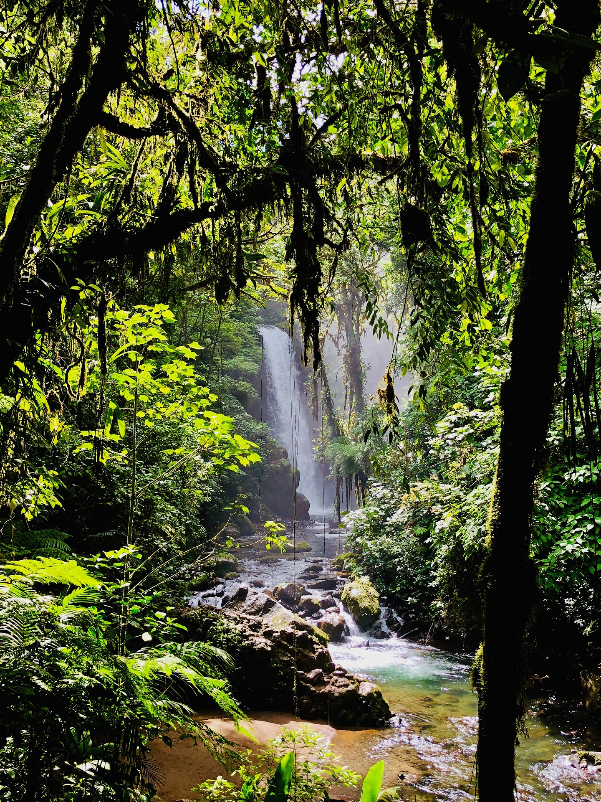

A vízesés vízből áll. Télen ha megfagy nagyon szép lesz.

Víz alatti vízesések is léteznek. Saját mikrolímát és szelet hoznak létre.
Tudj meg többetA vizesés:
Vizes
szép
Menő
| Vízesés | Ország | Magasság |
| Angel-vízesés | Venezuela | 979 m[1] |
| Tugela-vízesés | Dél-Afrika | 948 m[2] |
| Yumbilla-vízesés | Peru | 896 m[5] |